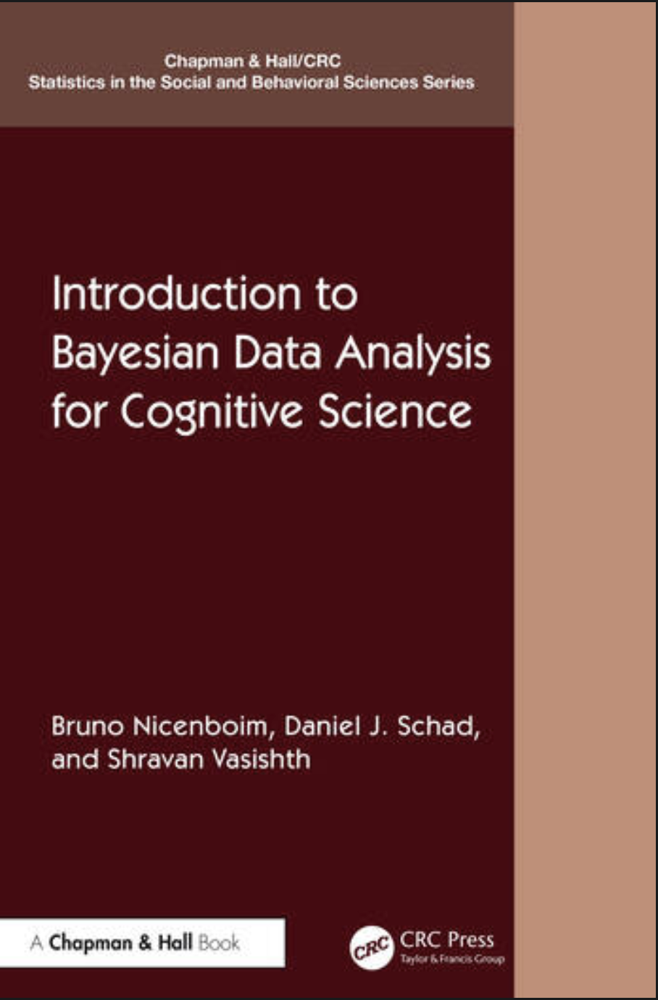

Annual statistics summer school:
SMLP, Aug 25-29, 2025
.
Teaching:
Science and statistics is/are one unitary thing; you cannot do one without the other.
Towards this end, I teach some (in my opinion) critically important classes that provide a solid statistical foundation for doing research in cognitive science.
- Free online course, four weeks (MOOC), enrollments open:
Introduction to Bayesian Data Analysis.
- Introduction to (frequentist) statistics
- Online video lectures and additional materials to accompany the book: Introduction to Bayesian data analysis for cognitive science

Research:
Over the last 20 years, our work has been focused on developing computational models of sentence comprehension, both for unimpaired adult speakers and impaired populations (individuals with aphasia). My current focus is on modeling systematic individual differences.
Book:
Along with my former student
Felix Engelmann, I have recently published a book with Cambridge University Press that summarizes the achievements of the last 20 years of work from my lab:
Sentence Comprehension as a Cognitive Process
A Computational Approach.
Public talks (special pandemic edition):
- Sept 2022, Indiana: The amazing saga of the Chinese relative clause: A cautionary tale for tomorrow's psycholinguists
- Stanford, April 20, 2021: Dependency completion in sentence processing: Some recent and computational investigations
- Tuebingen, Feb 22, 2021: Individual differences in cue-weighting in sentence processing: An evaluation using Approximate Bayesian Computation
- Michigan Linguistics, Feb 6, 2020): Computational models of retrieval processes: An evaluation using benchmark data